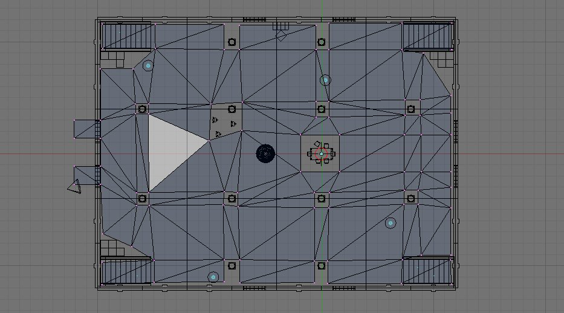
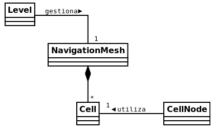
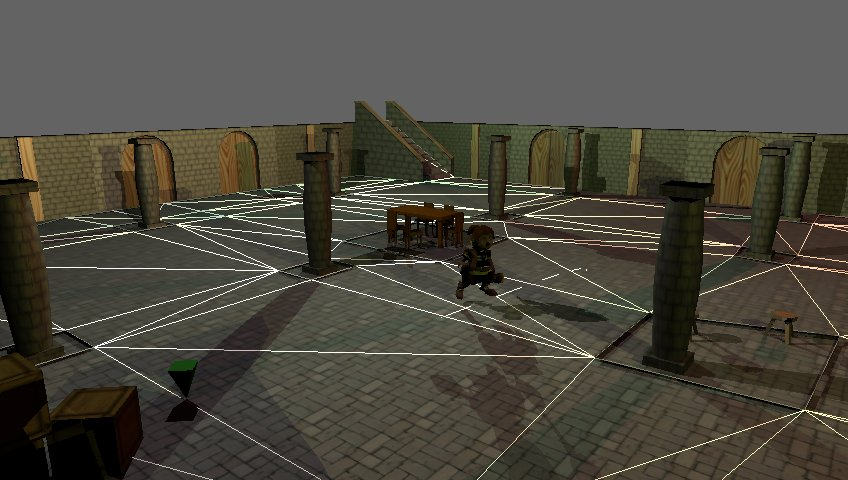
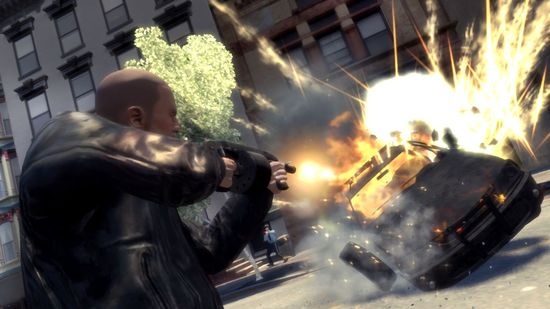
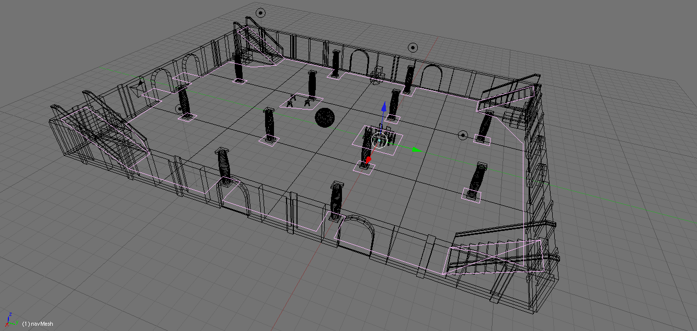

Hace unos días publicaba un vídeo mostrando el sistema de búsqueda de caminos empleando mallas de navegación y el algoritmo A estrella para Sion Tower. Pudisteis ver que el personaje recorría el camino de forma brusca, actualmente el problema se ha solucionado gracias a la inclusión de splines en una colaboración del compañero Javier Santacruz (@arld101). ¡La primera colaboración en forma de código! En este artículo nos centraremos en ilustrar a grandes rasgos como funciona la búsqueda de caminos internamente.
Conceptos generales
El problema inicial era la necesidad de que los enemigos pudiesen moverse por el escenario hacia un objetivo evitando los obstáculos estáticos. El ejemplo más común sería el de perseguir al protagonista para atacarle. Para ello es necesario definir las zonas transitables de alguna manera y la respuesta es emplear una malla de navegación.
En Blender se crea una malla compuesta de triángulos interconectados tal y como se ilustra en la imagen que ya he mostrado en alguna ocasión. El sistema de carga de niveles procesa la malla y genera un grafo de forma interna. Realizar búsqueda de caminos dentro del grafo es un problema conocido y relativamente sencillo de resolver como veremos más adelante. Además el sistema soporta celdas con inclinación (como en las escaleras) aunque al algoritmo esto le es indiferente.

Clases implicadas
El sistema de búsqueda de caminos de Sion Tower está compuesto por las clases del siguiente diagrama:

Cell: representa una celda triangular de la malla.* NavigationMesh: malla de navegación formada por un grafo de Cells. Permite localizar elementos en celdas de la malla, conocer la altura a la que debe colocarse un personaje para pegarlo al suelo, realizar consultas de línea de visión y búsqueda de caminos.* CellNode: nodo de la búsqueda de caminos. Tiene asociado una Cell, y los costes de la heurística.* Level: ya hablamos de ella en otra ocasión. Se encarga de cargar y almacenar la información de los niveles desde ficheros en formato XML. Entre la información del nivel, carga un NavigationMesh.
Algoritmo A*
El algoritmo A* es de sobra conocido por muchos y puede obtenerse mucha información sobre el mismo en decenas de fuentes. En la búsqueda de Sion Tower le indicamos una posición de comienzo y una de destino al método buildPath de NavigationMesh y se nos devuelve una lista de puntos por los que hay que pasar. De forma esquematizada se hace lo siguiente:
Encontrar las celdas en las que se encuentran las posiciones de inicio y destino
Crear un montículo con un CellNode asociado a la primera celda.
Bucle:
Sacar el nodo más prometedor del montículo.
Si el nodo corresponde a la celda final, hemos terminado.
Introducimos en el montículo los nodos cuyas celdas son vecinas a las del nodo actual.
Comenzar de nuevo el paso 3.
Reconstruir el camino de puntos empleando un spline para evitar cambios bruscos.
Colaboración para suavizar el camino
El compañero Francisco Javier Santacruz se interesó en suavizar la ruta resultante de la búsqueda y rápidamente se puso manos a la obra. Tras un par de días de trabajo me envió un parche que apliqué gustosamente por sus impresionantes resultados.
La forma de suavizar la ruta consiste en generar muchos puntos intermedios siguiendo un spline. Los splines son curvas definidas mediante polinomios: ¡por fin las clases de Métodos Numéricos sirven para algo! En el caso que nos ocupa utilizó el spline de Catmull-Roll, un tipo de interpolación cúbica. En la prueba que me mandó se visualizaba la ruta del personaje ya suavizada como una línea en el suelo dibujada con primitivas de Ogre. Simplemente restan por hacer unos pequeños ajustes, ¡muchas gracias!

Conclusiones
Implementar el sistema de búsqueda de caminos con una malla de navegación ha sido muy enriquecedor ya que era una materia completamente desconocida por mí hasta el momento. He aprendido mucho sobre las distintas aproximaciones existentes y la forma de aplicarla a un juego tridimensional. Además he obtenido la primera colaboración en términos de código a través de un parche. Los que estéis interesados en los detalles podéis acudir a la rama correspondiente de la forja.
Vuelve la actividad a la wiki de Ogre en español gracias a Alberto Cejas Sánchez. El compañero responsable del proyecto Fútbol es Así estaba trabajando en la detección de colisiones para su videojuego y finalmente decidió utilizar el wrapper de Bullet para Ogre. Tras dar los primeros pasos ha publicado “Colisiones y físicas con OgreBullet”. Por el momento ha publicado la instalación en GNU/Linux (de la que no existía apenas información) y Windows, más adelante irá completando el artículo. Muchísimas gracias a Alberto por su nueva colaboración.

Bullet es una de las bibliotecas libres (licencia zlib) de detección de colisiones y simulaciones físicas más potentes que existe. Por su extrema capacidad me pareció excesivo utilizarlo en Sion Tower ya que no requería interacciones físicas. No obstante, cualquier interesado en incorporar este elemento en su videojuego debería considerar utilizar Bullet. Entre sus características se encuentran:
Colisiones entre cuerpos rígidos y blandos de forma discreta o continua.* Varias formas básicas: esferas, cajas, cilindros, conos, poliedro convexos, etc.* Simulación de ropa, cuerdas y objetos deformables.* Restricciones para cuerpos más realistas.
Bullet se ha utilizado en decenas de proyectos de renombre como Blender, Cinema 4D, Grand Theft Auto IV o Trials HD. En el siguiente vídeo podéis ver un pequeño ejemplo del potencial de la biblioteca.
Este año la normativa del Concurso Universitario de Software Libre exige que se presente una memoria por proyecto para facilitar la evaluación de los mismos a los miembros del jurado. Este fin de semana no he podido desarrollar demasiado ya que he estado recopilando información para redactar dicha memoria. Aún así tengo novedades muy interesantes que iré publicando estos días.
En este nuevo vídeo podemos ver el sistema de búsqueda de caminos empleando el conocido algoritmo A* junto a una malla de triángulos diseñada con Blender. Es una sencilla demostración en la que el usuario mueve el marcador verde, pulsa la barra espaciadora y el personaje se dirige automáticamente al punto indicado por dicho marcador. Este sistema se integrará dentro del comportamiento de los enemigos de Sion Tower.
El sistema está orientado a la optimización del flujo de trabajo y permite que los diseñadores puedan definir desde Blender las zonas del mapa que serán transitables por los enemigos:
Creación de una malla de triángulos
Exportación de la malla a formato .mesh (Ogre)
Exportación del nivel completo en DotScene (incluyendo la malla)
Carga del escenario en el motor del juego

Sobra decir que aún queda un gran espacio para la mejora. Actualmente el sistema nos devuelve la lista de celdas que componen el camino hacia el destino indicado. Posteriormente, el personaje recorre los puntos centrales de las celdas cambiando su orientación de forma brusca. La única optimización implementada consiste en tratar de saltar todas las celdas intermedias posibles siempre que haya una línea recta transitable entre el origen y el destino.
En posteriores artículos ofreceré documentación adicional sobre el diseño y el funcionamiento interno del sistema. ¡Hay tanto trabajo por hacer!
Los chicos del Estudio Evergreen (Antonio Caro y Daniel Pellicer) siguen componiendo piezas para la banda sonora del juego a un ritmo envidiable. Recientemente colgaron en su blog dos nuevas melodías, las que sonarían durante al finalizar con éxito un nivel o al morir en el intento. A continuación podréis escucharlas.
Victoria: una canción alegre que se reproducirá en conjunción con la animación de celebración del protagonista. Se compone de dos partes: la primera es más intensa mientras que la segunda es más relajada y se reproduce en un bucle. Está pensado para que el jugador pueda pasar el tiempo que desee en la pantalla que muestra las habilidades adquiridas y los puntos conseguidos en cada nivel.
Derrota: mezcla una melodía de órgano bastante siniestra con puntos cómicos como unos platillos o animales graznando. Está pensada para que el usuario sea consciente de que ha perdido restándole importancia al fracaso y animando a que reintente la jugada.
Recomiendo encarecidamente que leáis los artículos de su blog en los que explican de forma más razonada los motivos que les llevan a componer estas piezas de una manera en concreto. Como ya he mencionado en artículos anteriores, el arte de Sion Tower es libre bajo Creative Commons 3.0 by-nc-sa.